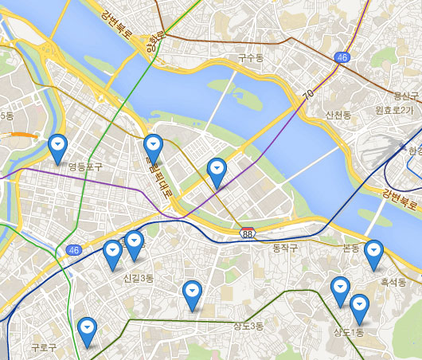

주메뉴 바로가기
본문 바로가기
통계주제도
조회중입니다...
튜토리얼
시도별 귀농 / 귀어 / 귀촌인구 현황

GPS
맵기능설정
GPS
확대하기
이동
읍면동
축소하기
통계메뉴
주제도 설정
통계선택
전체
귀농
귀촌
귀어
년도선택
2000
2005
2010
2015
2016
지역경계
자동
시도별 전국지도
지도유형
색상
버블
통계표출
ON
OFF
통계주제도
인구와 가구
주거와 교통
복지와 문화
노동과 경제
환경과 안전
주제도 요청하기
보고서 보기
도움말 보기
전체 확면 확대
메뉴 자동닫기
닫기
인구와 가구
주거와 교통
복지와 문화
노동과 경제
환경과 안전
인구와 가구 주제
1인 가구 변화
인구 변화
인구이동
주민등록 인구 현황
인구 자연증가 현황
실업률
65세 이상 1인가구 변화
여자인구 대비 남자인구 비율
15세 미만 유소년 인구 변화
65세 이상 고령자 인구 변화
시군구별 외국인 주민 현황
출생 및 사망 현황
혼인 및 이혼율 현황
노령화 지수
인구 밀도
지역별 농림어가의 청장년인구 변화
닫기
데이터보드
지도정보 기준
데이터보드 닫기
지역을 클릭하면 해당지역 증감현황을 볼 수 있습니다.
연도별 귀농/귀어/귀촌 인구 수(명)
충청북도
2013년
2014년
2015년
2016년
종합
유입/유출대비